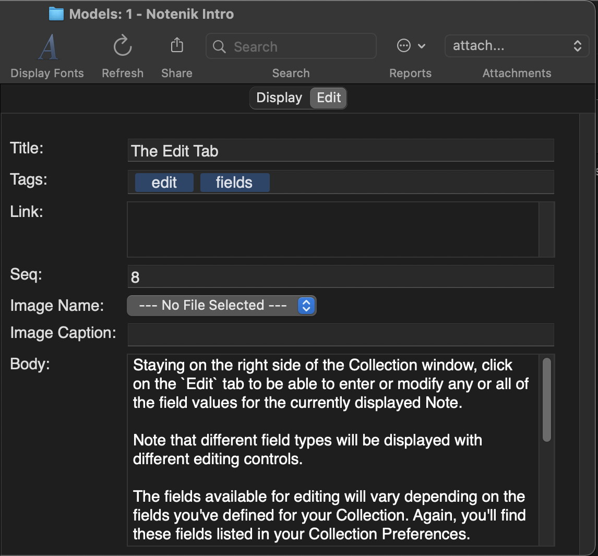

Notenik Intro
Back to Notenik.app
8 The Edit Tab
Staying on the right side of the Collection window, click on the Edit tab to be able to enter or modify any or all of the field values for the currently displayed Note.
Note that different field types will be displayed with different editing controls.
The fields available for editing will vary depending on the fields you've defined for your Collection. Again, you'll find these fields listed in your Collection Preferences.
When you're done editing, you can save your changes and return to the Display tab with any of several different controls.
Display tab; OK button within the Toolbar; command S, or select the corresponding Save Note item beneath the Note menu; Next: Markdown